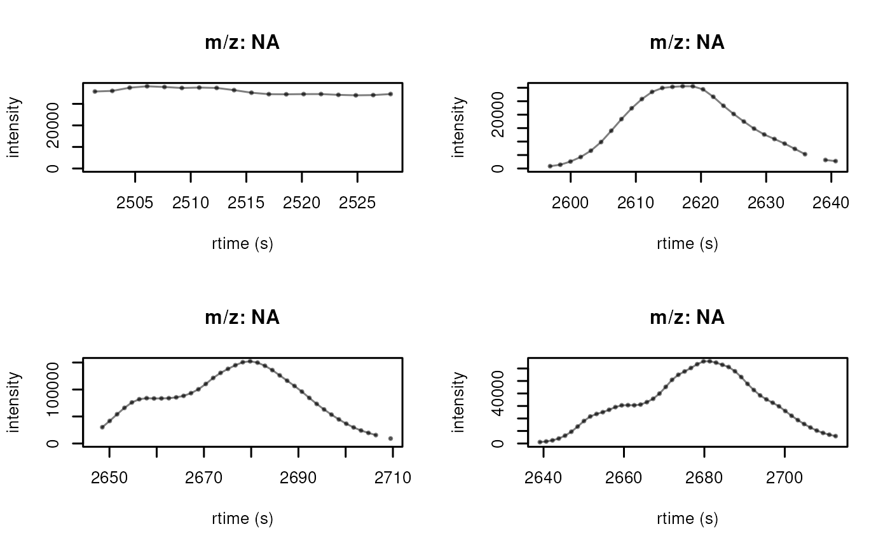

Extract an ion chromatogram for each chromatographic peak
Source:R/AllGenerics.R, R/XcmsExperiment.R
chromPeakChromatograms.RdExtract an ion chromatogram (EIC) for each chromatographic peak in an
XcmsExperiment() object. The result is returned as an XChromatograms()
of length equal to the number of chromatographic peaks (and one column).
Arguments
- object
An
XcmsExperiment()with identified chromatographic peaks.- ...
currently ignored.
- expandRt
numeric(1)to eventually expand the retention time range from which the signal should be integrated. The chromatogram will contain signal fromchromPeaks[, "rtmin"] - expandRttochromPeaks[, "rtmax"] + expandRt. The default isexpandRt = 0.- expandMz
numeric(1)to eventually expand the m/z range from which the signal should be integrated. The chromatogram will contain signal fromchromPeaks[, "mzmin"] - expandMztochromPeaks[, "mzmax"] + expandMz. The default isexpandMz = 0.- aggregationFun
character(1)defining the function how signals within the m/z range in each spectrum (i.e. for each discrete retention time) should be aggregated. The default (aggregationFun = "max") reports the largest signal for each spectrum.- peaks
optional
characterproviding the IDs of the chromatographic peaks (i.e. the row names of the peaks inchromPeaks(object)) for which chromatograms should be returned.- return.type
character(1)specifying the type of the returned object. Can be eitherreturn.type = "XChromatograms"(the default) orreturn.type = "MChromatograms"to return either a chromatographic object with or without the identified chromatographic peaks, respectively.- progressbar
logical(1)whether the progress of the extraction process should be displayed.
See also
featureChromatograms() to extract an EIC for each feature.
Examples
## Load a test data set with detected peaks
library(MSnbase)
library(xcms)
library(MsExperiment)
faahko_sub <- loadXcmsData("faahko_sub2")
## Get EICs for every detected chromatographic peak
chrs <- chromPeakChromatograms(faahko_sub)
chrs
#> XChromatograms with 248 rows and 1 column
#> [,1]
#> <XChromatogram>
#> [1,] peaks: 1
#> [2,] peaks: 1
#> ... ...
#> [247,] peaks: 1
#> [248,] peaks: 1
#> phenoData with 2 variables
#> featureData with 5 variables
#> - - - xcms preprocessing - - -
#> Chromatographic peak detection:
#> method: centWave
## Order of EICs matches the order in chromPeaks
chromPeaks(faahko_sub) |> head()
#> mz mzmin mzmax rt rtmin rtmax into intb maxo
#> CP001 453.2 453.2 453.2 2506.073 2501.378 2527.982 1007409.0 1007380.8 38152
#> CP002 302.0 302.0 302.0 2617.185 2595.275 2640.659 687146.6 671297.8 30552
#> CP003 344.0 344.0 344.0 2679.783 2646.919 2709.517 5210015.9 5135916.9 152320
#> CP004 430.1 430.1 430.1 2681.348 2639.094 2712.647 2395840.3 2299899.6 65752
#> CP005 366.0 366.0 366.0 2679.783 2642.224 2718.907 3365174.0 3279468.3 79928
#> CP006 343.0 343.0 343.0 2678.218 2637.529 2712.647 24147443.2 23703761.7 672064
#> sn sample
#> CP001 38151 1
#> CP002 46 1
#> CP003 68 1
#> CP004 42 1
#> CP005 49 1
#> CP006 87 1
## variable "sample_index" provides the index of the sample the EIC was
## extracted from
fData(chrs)$sample_index
#> [1] 1 1 1 1 1 1 1 1 1 1 1 1 1 1 1 1 1 1 1 1 1 1 1 1 1 1 1 1 1 1 1 1 1 1 1 1 1
#> [38] 1 1 1 1 1 1 1 1 1 1 1 1 1 1 1 1 1 1 1 1 1 1 1 1 1 1 1 1 1 1 1 1 1 1 1 1 1
#> [75] 1 1 1 1 1 1 1 1 1 1 1 1 1 2 2 2 2 2 2 2 2 2 2 2 2 2 2 2 2 2 2 2 2 2 2 2 2
#> [112] 2 2 2 2 2 2 2 2 2 2 2 2 2 2 2 2 2 2 2 2 2 2 2 2 2 2 2 2 2 2 2 2 2 2 2 2 2
#> [149] 2 2 2 2 2 2 2 2 2 2 2 2 2 2 2 2 2 2 2 2 2 2 2 2 2 2 2 2 2 2 2 2 2 2 2 2 2
#> [186] 2 2 3 3 3 3 3 3 3 3 3 3 3 3 3 3 3 3 3 3 3 3 3 3 3 3 3 3 3 3 3 3 3 3 3 3 3
#> [223] 3 3 3 3 3 3 3 3 3 3 3 3 3 3 3 3 3 3 3 3 3 3 3 3 3 3
## Get the EIC for selected peaks only.
pks <- rownames(chromPeaks(faahko_sub))[c(6, 12)]
pks
#> [1] "CP006" "CP012"
## Expand the data on retention time dimension by 15 seconds (on each side)
res <- chromPeakChromatograms(faahko_sub, peaks = pks, expandRt = 5)
plot(res[1, ])
